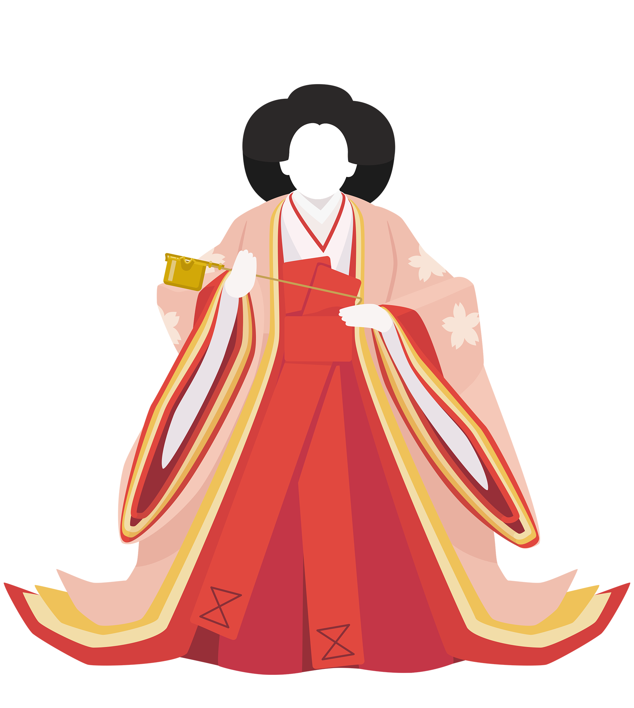
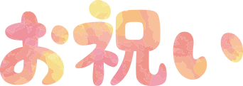
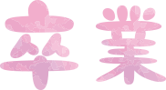

左右の矢印ボタン・左右スワイプ・フレーム選択：フレームを選択2本の指で広げる/つまむ：フレームの拡大・縮小
日付枠・日付枠の編集パネル：日付枠の色、サイズ、形式などを編集ドラッグ：配置位置移動 ✕ボタン：枠を非表示
スタンプ選択：好きなスタンプを選択ドラッグ：配置位置移動 ✕ボタン：スタンプを削除＋-ボタン：大きさ調整
メニューの非表示：シャッターと「メニューの非表示」以外、写真に写らないものは非表示
写真の質感：モノクロ、古写真など写真の質感を選択
右下のボタン：自撮りモードに変更
保存する：スマホに保存シェア：LINEやSNSで友達に送る取り直し・✕ボタン：撮影画面に戻る